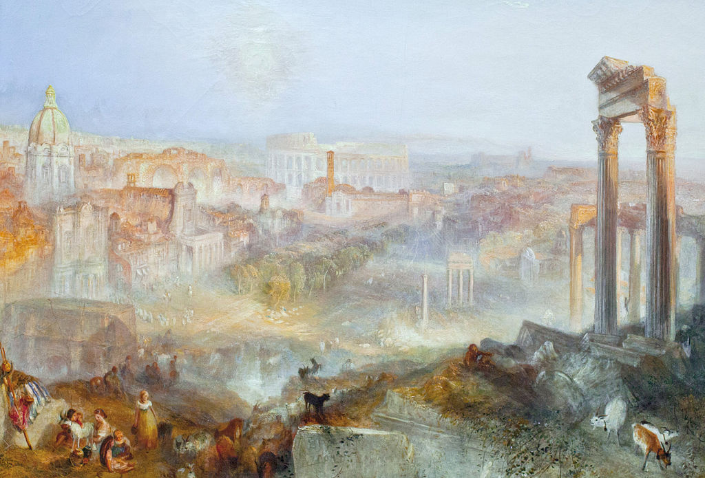

<head>
<meta charset="UTF-8" />
<meta name="keywords" content="drawing, painting" />
<meta name="description" content="drawings by Sunjy" />
<title>Sunjy</title>
<link rel="shortcut icon" type="image/x-icon" href="../../mImages/mCommon/favicon.ico" media="screen" />
<link rel="stylesheet" type="text/css" href="../../mCsses/mCommon/mCssA.css" />
<link rel="stylesheet" type="text/css" href="../../mCsses/mCommon/mCssB.css" />
<link rel="stylesheet" type="text/css" href="../../mCsses/mCommon/mCssC.css" />
<link rel="stylesheet" type="text/css" href="../../mCsses/mCommon/mCssD.css" />
<link rel="stylesheet" type="text/css" href="../../mCsses/mContent/mCssA.css" />
<link rel="stylesheet" type="text/css" href="../../mCsses/mContent/mCssB.css" />
<link rel="stylesheet" type="text/css" href="../../mCsses/mContent/mCssC.css" />
<link rel="stylesheet" type="text/css" href="../../mCsses/mContent/mCssD.css" />
</head>
<script type="text/javascript" src="../../mScripts/mContent/mContentAA.js" /></script>
<script type="text/javascript" src="../../mScripts/mContent/mContentAB.js" /></script>
<script type="text/javascript" src="../../mScripts/mContent/mContentAC.js" /></script>
<script type="text/javascript" src="../../mScripts/mContent/mContentAD.js" /></script>
<script type="text/javascript"></script> 
<script type="text/javascript">
document.write('<div class="mImgAbsolute"></div>');
/*
document.write('<p class="mFontSizeBColor" />From a white paper...</p>');
document.write('<table class="center"><tr><td>');
document.write('');
document.write('</td></tr></table>');
*/
</script>


<script type="text/javascript">
document.write('<p class="mFontSizeBColor" />Modern Rome – Campo Vaccino</p>');
document.write('<p class="mFontSizeSColor" />“Modern Rome – Campo Vaccino” by J.M.W. Turner is a landscape vision of the yet unexcavated Roman Forum, still called the Campo Vaccino meaning “Cow Pasture,” shimmering in the hazy light. Ten years after his final journey to Rome, Turner envisioned Rome from his memory. The churches and ancient monuments in and around the Roman Forum are dissolving as the moon rises and the sun sets.<br><br>This picture’s light effects exemplify Turner at his most accomplished, with Turner evoking less a place in the real world and more a place in the imagination.<br><br>“The moon is up, and yet it is not night.<br> The sun as yet divides the day with her.” <br>– Lord Byron<br><br>Images of Classical, Renaissance, and Baroque Rome dominate the canvas. But in the foreground amidst these ancient splendors and history, the city’s inhabitants carry on with their daily activities in the emerging shadows of the Capitoline Hill.<br><br>Roman Forum<br><br>The Roman Forum is a rectangular plaza surrounded by the ruins of several important ancient buildings in the center of the city of Rome. During Ancient Roman times, the Forum was the center of day-to-day life in Rome. It was the site of triumphal processions, elections, the venue for public speeches, criminal trials, and commercial affairs. Here statues and monuments commemorated the city’s great men.<br><br>As Rome’s population declined after the fall of the Empire, efforts were made to keep the Forum intact. However, by the 6th century, some of the old edifices began to be transformed into Christian churches. The emperor Constans who visited the city in 665 AD, stripped the lead roofs, which exposed the monumental buildings to the weather and hastened deterioration. By the 8th century, the whole space was surrounded by Christian churches taking the place of the abandoned and ruined temples.<br><br>During the Middle Ages, the monuments were, for the most part, buried under debris, and its location was designated the “Campo Vaccino” located between the Capitoline Hill and the Colosseum. After the 8th century, the structures of the Forum were dismantled, rearranged, and used to build feudal towers and castles in the local area. In the 13th century, these rearranged structures were torn down, and the site became a dumping ground. This, along with the debris from the dismantled medieval buildings and ancient structures, helped contribute to the rising ground level.<br><br>Located in the small valley between the Palatine and Capitoline Hills, the Forum today is a sprawling ruin of architectural fragments and intermittent archaeological excavations. The Roman Forum has been a source of inspiration for artists for centuries. Notable artists of the Forum include Giambattista Piranesi, Maerten van Heemskerck, Pirro Ligorio, Canaletto, Claude Lorrain, Giovanni Paolo Panini, Hubert Robert, J.M.W. Turner and many others.<br><br>The Roman Forum was a site for many artists studying in Rome to sketch during the 17th through the 19th century. The focus of many of these works was on the current state of the Roman Forum, known locally as the “Campo Vaccino,” or “cow field,” due to the livestock which grazed on the largely ignored section of the city.</p>');
document.write('<table class="center" /><tr><td>');
document.write('<br>This picture’s light effects exemplify Turner at his most accomplished, with Turner evoking less a place in the real world and more a place in the imagination.<br><br>“The moon is up, and yet it is not night.<br> The sun as yet divides the day with her.” <br>– Lord Byron<br><br>Images of Classical, Renaissance, and Baroque Rome dominate the canvas. But in the foreground amidst these ancient splendors and history, the city’s inhabitants carry on with their daily activities in the emerging shadows of the Capitoline Hill.<br><br>Roman Forum<br><br>The Roman Forum is a rectangular plaza surrounded by the ruins of several important ancient buildings in the center of the city of Rome. During Ancient Roman times, the Forum was the center of day-to-day life in Rome. It was the site of triumphal processions, elections, the venue for public speeches, criminal trials, and commercial affairs. Here statues and monuments commemorated the city’s great men.<br><br>As Rome’s population declined after the fall of the Empire, efforts were made to keep the Forum intact. However, by the 6th century, some of the old edifices began to be transformed into Christian churches. The emperor Constans who visited the city in 665 AD, stripped the lead roofs, which exposed the monumental buildings to the weather and hastened deterioration. By the 8th century, the whole space was surrounded by Christian churches taking the place of the abandoned and ruined temples.<br><br>During the Middle Ages, the monuments were, for the most part, buried under debris, and its location was designated the “Campo Vaccino” located between the Capitoline Hill and the Colosseum. After the 8th century, the structures of the Forum were dismantled, rearranged, and used to build feudal towers and castles in the local area. In the 13th century, these rearranged structures were torn down, and the site became a dumping ground. This, along with the debris from the dismantled medieval buildings and ancient structures, helped contribute to the rising ground level.<br><br>Located in the small valley between the Palatine and Capitoline Hills, the Forum today is a sprawling ruin of architectural fragments and intermittent archaeological excavations. The Roman Forum has been a source of inspiration for artists for centuries. Notable artists of the Forum include Giambattista Piranesi, Maerten van Heemskerck, Pirro Ligorio, Canaletto, Claude Lorrain, Giovanni Paolo Panini, Hubert Robert, J.M.W. Turner and many others.<br><br>The Roman Forum was a site for many artists studying in Rome to sketch during the 17th through the 19th century. The focus of many of these works was on the current state of the Roman Forum, known locally as the “Campo Vaccino,” or “cow field,” due to the livestock which grazed on the largely ignored section of the city." />');
document.write('</td></tr></table>');
</script>


